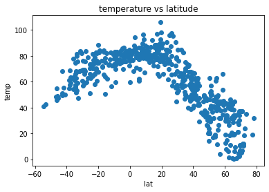

About Me
Jim T: BSChE, MS Applied Statistics

Temperature Data
This site examines Temperature data for global locations based on humidity, temperature and cloud index and wind speed.
The purpose of the analysis is to examine temperature as a function of distance from the equator.
The analysis uses Matplotlib to create various plots of temperature vs latitude and to conduct best fit linear regression of the maximum temperature vs latitute for the northern and southern hemisphere.
Analysis Deep Dive


Click on the image to open in its own page.